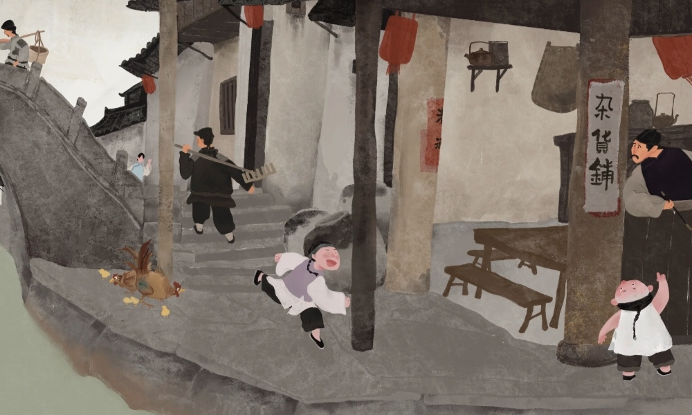
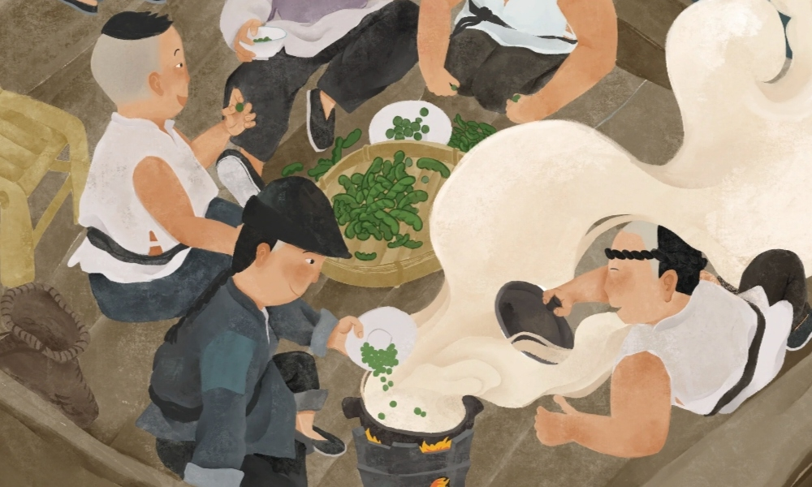
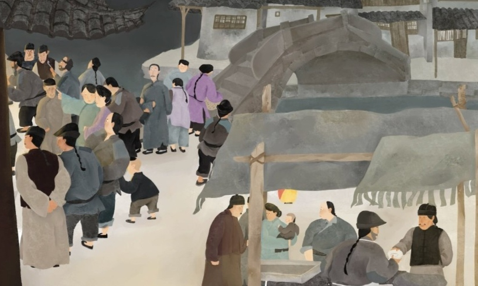

对童年生活的怀念
《社戏》中，鲁迅以细腻的笔触回忆了童年时与农村孩子无忧无虑、天真烂漫的生活。他通过描写夏夜行船、船头看戏、月下归航等场景，
勾勒出一幅幅充满童趣和诗意的画面，表达了对那段美好时光的深切怀念。这种怀念不仅是对具体事件的回忆，更是对纯真年代和简单生活的向往。

对劳动人民的赞美
在《社戏》中，鲁迅刻画了一群栩栩如生的农家少年形象，
他们勤劳、善良、友爱、无私。这些孩子不仅陪伴作者度过了愉快的童年时光，还通过他们的言行举止展现了劳动人民的美好品质。鲁迅通过这些形象，表达了对劳动人民的深厚感情和崇高敬意。

对自由生活的向往
《社戏》中的农村生活充满了自由与诗意，孩子们可以自由地在大自然中嬉戏玩耍，不受任何束缚。这种自由不仅体现在物质上，
更体现在精神上。鲁迅通过描绘这种自由的生活状态，表达了自己对摆脱封建束缚、追求自由生活的向往。他渴望在自由的环境中，能够保持纯真的心灵和独立的思考。
对纯真关系的向往
在《社戏》中，孩子们之间的友谊纯真无邪，没有隔阂和等级之分。他们共同分享快乐、分担困难，
形成了一种和谐的人际关系。鲁迅通过这种描写，表达了对人与人之间纯真关系的向往。他认为，在复杂的社会中，人们应该保持一颗纯真的心，相互理解、相互尊重，共同构建一个和谐美好的社会。
